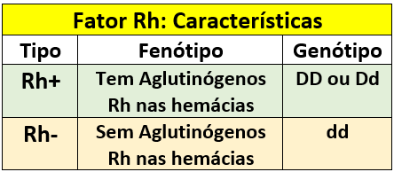
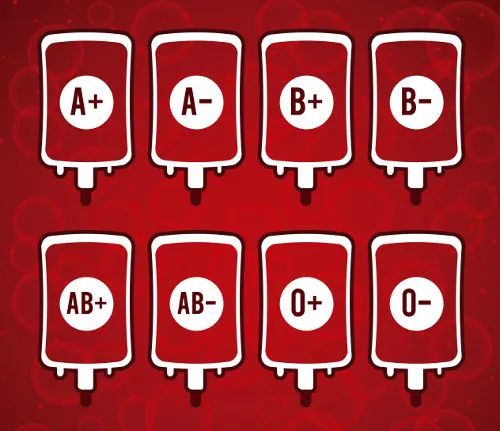

O que é fator Rh?
De forma simples e direta, o fator Rh indica se o sangue é positivo ou negativo. O nome faz referência aos macacos da espécie Rhesus, que junto com coelhos, foram os cobaias dos pesquisadores Landsteiner e Wiener para a descoberta, nos anos 40.
A técnica usada pelos cientistas foi a de injetar o sangue dos macacos nos coelhos. Eles notaram, assim, que os coelhos passavam a produzir anticorpos para combater as hemácias estranhas e o sangue aglutinava. Os anticorpos, por sua vez, foram nomeados anti-Rh.
Posteriormente, os testes foram feitos em sangue humano, com a aplicação das amostras aglutinadas dos coelhos. Foi observado que 85% das reações também era de aglutinação. Estas foram chamadas de Rh positivo (Rh+) e as que não possuíam o fator Rh nas hemácias, de Rh negativo (Rh-).
Sistema ABO
O sistema ABO classifica grupos sanguíneos em tipos A, B, AB e O. Esse sistema foi descrito em 1900 por Karl Landsteiner, que, inicialmente, descreveu os grupos A, B e O. O fenótipo AB foi descrito apenas alguns anos depois, por Alfred Von Decastello.
Significado do sangue B
O sangue B é considerado um grupo mais raro. Como possui anticorpos contra o tipo A ele é considerado anti-A. Quem possui o sangue B só pode receber sangue dos tipos “B” e “O”.
Quem doa para quem?
Indivíduos do sangue B não podem doar para os de sangue A, pois suas hemácias seriam atacadas pelas aglutininas anti-B. Eles podem doar para pessoas com sangue B e pessoas com sangue AB.
Onde surgiu o sangue tipo B?
O tipo B surgiu entre 10 mil e 15 mil anos atrás nas montanhas do Himalaia. É considerado um dos mais raros, presente em apenas 10% da população brasileira.
Importância de saber o tipo sanguíneo
A tipagem sanguínea é essencial para transfusões seguras. Compatibilidade é crucial para evitar reações graves ou até fatais no receptor.
Eritroblastose Fetal
A eritroblastose fetal, também conhecida como doença hemolítica perinatal, ocorre quando há incompatibilidade sanguínea entre a mãe e o feto. O caso mais comum é a incompatibilidade Rh, mas também pode envolver outros grupos sanguíneos.
Causas
Geralmente, acontece quando a mãe é Rh-negativa e o bebê é Rh-positivo. Durante a gravidez ou no parto, o sangue do bebê pode entrar em contato com o da mãe, levando o sistema imunológico materno a produzir anticorpos contra as hemácias fetais. Em gestações subsequentes, esses anticorpos podem atravessar a placenta e atacar as hemácias do bebê, causando destruição (hemólise).
Consequências para o bebê
- Anemia severa devido à destruição das hemácias.
- Hiperbilirrubinemia (acúmulo de bilirrubina), levando a icterícia.
- Hidropisia fetal: acúmulo de líquidos em órgãos e cavidades, podendo ser fatal.
- Kernicterus: lesão cerebral causada por níveis excessivamente altos de bilirrubina.
Diagnóstico
O diagnóstico é realizado por meio de exames de sangue da mãe para determinar o tipo sanguíneo e o fator Rh, além do teste de Coombs indireto para detectar anticorpos anti-Rh. O acompanhamento do bebê é feito por ultrassom, doppler e análise do líquido amniótico ou cordocentese.
Tratamento e Prevenção
- Imunoglobulina anti-D (RhoGAM): aplicada à mãe Rh-negativa em gestações iniciais ou logo após partos, abortos ou sangramentos para prevenir a sensibilização.
- Transfusão intrauterina: para casos graves de anemia fetal.
- Exsanguineotransfusão após o nascimento, se necessário, para controlar anemia e icterícia.